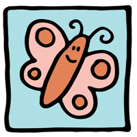
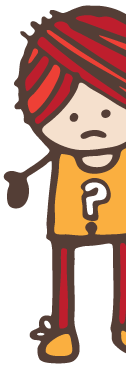

这段文字在底部！
上面的这句话被对齐到了图片的底部。为了达成这个效果，我们需要使用到我们的CSS文件以及image标签，同时也要注意一下我们有多大的空间来使用。
CSS 部分
让我们在CSS文件中创建一个名为"bottom"的类...
img.bottom {
vertical-align:baseline;
}
image 标签部分
我们给涉及到的这张图片的image标签添加"bottom"这个类....
代码:
<img src="images/yourimagefile.jpg" class="bottom" />
就是这样！（下面会有详细的说明）
方法说明
如果你不确定要怎么做...
我们来详细地说明一下这种方法。
利用CSS将文字对齐到图片的底部。
CSS文件中包含了你的网页以特定方式显示内容的依据。为了使用CSS，我们需要修改CSS文件和HTML文档。
首先你需要更新CSS文件并且添加如下的代码...
img.top {
vertical-align:baseline;
}
在CSS中这叫做创建一个"类"。当它被调用时将会指示你的网页怎样显示图片。在这里，这个特定的类名为"bottom"。
一旦你在CSS文件中添加了这个，你就要告诉图片使用哪个指令。找到那个image标签并且修改它，这样它就知道遵循哪个指令了...
<img src="images/yourimagefile.jpg" class="bottom" />
上面的代码中你可以看到我们添加了一个"类"，它的名字是"bottom"。现在图片就知道从哪里得到指令了。
一旦CSS文件和HTML中的iamge标签被更新了，紧靠着那张图片的文字就会被对齐到图片的底部。